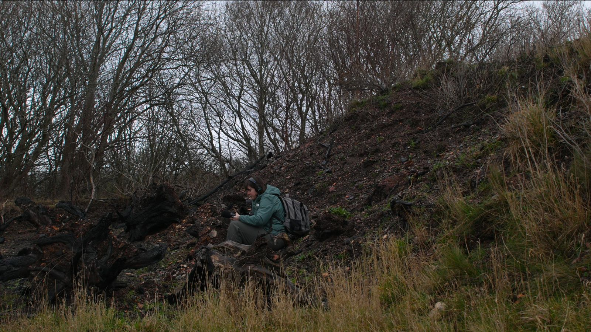

About Me

When I first started making my own films, I hated sound. This was because I didn’t understand it. I remember editing one of my first films and being so frustrated that I couldn't get the sound right, but knowing that it was critical to the film. Once I actually learned and understood sound and started practicing it, I was blown away by what I could do with it, how I could manipulate it, and what it added to a film and the story telling. Now, I have a great passion for sound.
I have my MSc in Sound Design and my BA in Visual media with a minor in art history. I have a great love and passion for films from fiction, documentary to animation. My personal style is more naturalistic with moments of theatricality. I’ve worked as a sound recordist on both student films and indie films. I have worked with Sound Devices 633, MixPre 6, Sony FN8, Sennheiser shotgun and lavalier microphones while recording. The films I've worked on included outdoor and indoor scenes, scenes shot by the ocean, on a basketball court and in downtown Boston. I’ve also been the sound designer for a couple short films. That includes the dialogue editing, sound effects editing, foley recording and editing, and mixing and mastering the soundtrack. In this role I've used Pro Tools, Ableton Live, Recording studios, 5.1 and dolby atmos. I’ve worked with actors for ADR sessions and have done lots of foley work for my films.
If you are looking for a sound artist or assistant with creativity, artistry and great attention to detail, please reach out and lets discuss your project!
This website has been coded by me using the Html template "Phantom by htmlup" and Visual Studio.